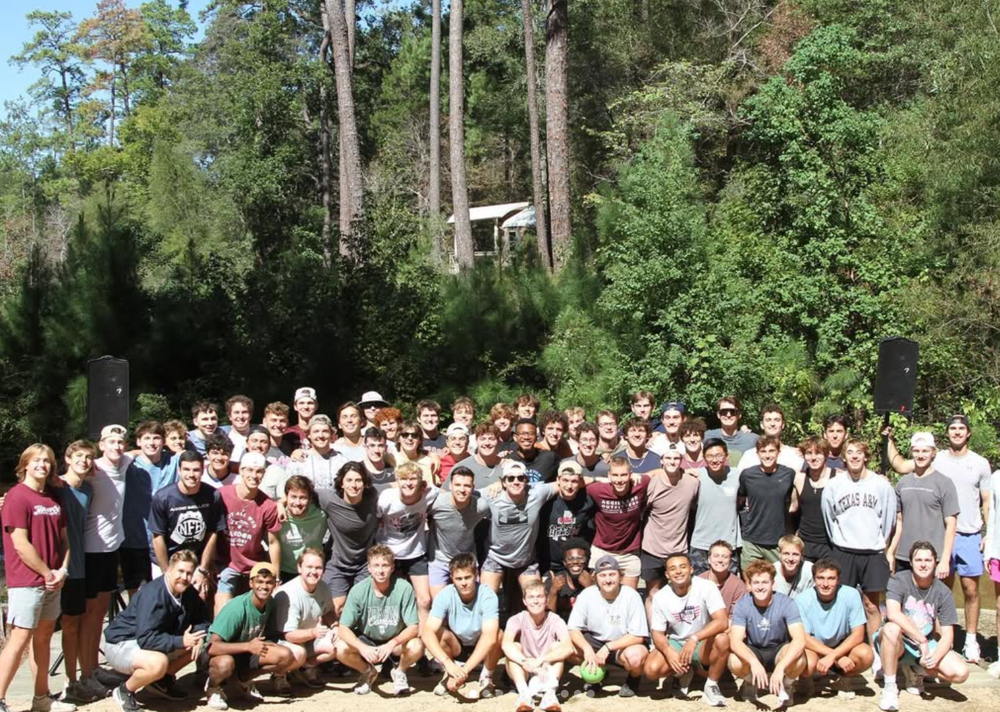

Service & Mentorship
Big Brothers Big Sisters of Brazos Valley
- Meet consistently with my Little to build trust and confidence; set simple goals (academics, routines) and celebrate progress.
- Blend homework check-ins with fun so mentoring feels supportive, not lecturing.
- Coordinate with guardian and BBBS staff to keep meetings reliable and safe; always make space for his voice.

Brotherhood of Aggie Mentors
Event & mentorship lead - Ball 4 Bryan fundraiser and on-campus/off-campus mentoring.
- Co-coordinate Ball 4 Bryan low-hoop tournament benefiting Bryan High School.
- Run logistics for 3v3 basketball and 7v7 football outreach events for the young men of Bryan High.
- Mentor at the juvenile detention center, focusing on trust-building and accountability.
- Leverage tough, honest conversations-using humility and vulnerability-to de-escalate and build rapport.

Antioch Community Church - Worship Team
Bassist | Pianist | Music Director - musical leadership under tight timelines.
- Prepare full arrangements: learn band parts, mark cues/transitions, and shape dynamics.
- Lead rehearsals: call sections, tighten stops, align with worship leader on keys/structure.
- Coordinate with audio for clean mixes; keep the team calm and cohesive under time pressure.